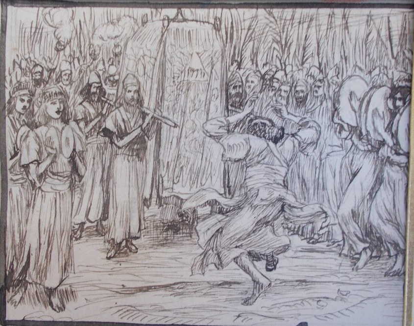

2 Samuel 6 — La Traducción Mister

2 Samuel 6:14–15. David y toda la casa de Israel suben el arca de Jehová con un grito y con sonido de cuerno de carnero, y David va girando con todas sus fuerzas delante de Jehová, ceñido con un efod de lino. Es uno de los bocetos a pluma de Tissot para sus ilustraciones del Antiguo Testamento, publicados tras su muerte por Maurice Brunoff en 1904. El dibujo muestra una túnica suelta, un cuerno largo y recto y una mujer con pequeños címbalos; el hebreo tiene el efod de lino, el cuerno de carnero y los címbalos del versículo 5, y nombra la danza con la sola palabra mekharker.

Notas del traductor — versículo por versículo
Los escogidos. «Y David volvió a reunir a todos los escogidos de Israel, treinta mil»: el hebreo no dice por qué un ejército va a buscar un arca. El griego tiene «setenta mil». La RV60 tiene «todos los escogidos de Israel»; la NVI «los treinta mil soldados escogidos de Israel»; la TNM 1987 «todos los hombres selectos de Israel, treinta mil». Saúl había tomado «tres mil hombres escogidos» contra David (1 Samuel 24:2, ya en estas páginas).
Baale-judá. «Desde Baale-judá, para hacer subir de allí el arca de Dios»: «Baale-judá» está en un versículo de la Biblia hebrea. Es Quiriat-jearim, que las listas de Josué llaman «Baala — esa es Quiriat-jearim» y «Quiriat-baal — esa es Quiriat-jearim» (Josué 15:9, 60), donde el arca había estado en «la casa de Abinadab en la colina» desde que los filisteos la devolvieron (1 Samuel 7:1–2, todos ya en estas páginas); Crónicas dice «a Baala, es decir, a Quiriat-jearim» (1 Crónicas 13:6). La RV 1909 tiene «de Baal de Judá»; la RV60 «Baala de Judá»; la NVI «Balá de Judá»; la TNM 1987 «Baale-judá»; la Douay inglesa «of the men of Juda». El griego lee el nombre como un título, «desde los jefes de Judá».
El Nombre sobre los querubines. «El arca de Dios, sobre la cual es invocado el Nombre, el nombre de Jehová de los ejércitos, que se sienta sobre los querubines encima de ella»: «es invocado el Nombre, el nombre» (niqra shem shem, con la palabra duplicada) está en un versículo. Un nombre invocado sobre una cosa es una declaración de propiedad (véase la nota de Deuteronomio 28:10, ya en estas páginas). «Que se sienta sobre los querubines» está en cuatro versículos. Son el arca de Silo sacada contra los filisteos (1 Samuel 4:4, ya en estas páginas), este, y dos más (2 Reyes 19:15; Isaías 37:16). La RV 1909 tiene «que mora en ella entre los querubines»; la RV60 «que mora entre los querubines»; la NVI «sobre la cual se invoca su Nombre, el nombre del Señor de los Ejércitos que reina entre los querubines»; la TNM 1987 «donde se invoca un nombre, el nombre de Jehová de los ejércitos, sentado sobre los querubines»; la Douay inglesa «who sitteth over it upon the cherubims».
Un carro nuevo. «Y pusieron el arca de Dios sobre un carro nuevo, y la llevaron de la casa de Abinadab, que estaba en la colina; y Uza y Ahío, hijos de Abinadab, guiaban el carro nuevo»: «un carro nuevo» está en tres versículos. Son el consejo de los sacerdotes filisteos para devolver el arca (1 Samuel 6:7, ya en estas páginas), este versículo y 1 Crónicas 13:7. Los filisteos la habían devuelto en un carro así con dos vacas. Para Israel el arca se hizo con varas en anillos «para llevar el arca con ellas» (Éxodo 25:14), los hijos de Coat llevaban las cosas santas «al hombro» (Números 7:9), y «no tocarán la cosa santa, para que no mueran» (Números 4:15, todos ya en estas páginas); el narrador no hace comparación. «Ahío» puede leerse también «su hermano», y el griego tiene «sus hermanos». La RV 1909 tiene «que estaba en Gabaa»; la RV60 «que estaba en el collado»; la NVI «que estaba situada en una colina»; la TNM 1987 «que estaba en la colina»; la Douay inglesa «in Gabaa».
Festejando. «Y David y toda la casa de Israel festejaban delante de Jehová con toda clase de madera de ciprés, y con liras y con arpas y con panderos, y con sonajas y con címbalos»: «festejaban delante de Jehová» está en un versículo; la raíz es sachaq, el «se diviertan» de los jóvenes en Gabaón (2 Samuel 2:14) y el «festejaban» de las mujeres que salieron al encuentro de David (1 Samuel 18:7, ambos ya en estas páginas). El hebreo no tiene la palabra «instrumentos»; nombra la madera, berosh, ciprés o enebro o abeto, y las liras (kinnorot) y las arpas (nevalim) son las de 1 Samuel 10:5 (ya en estas páginas). La palabra para «sonajas» (mena’ane’im) está en un versículo, y «címbalos» es tseltselim, de la misma raíz que el insecto zumbador de Deuteronomio 28:42 (véase tzelatzal). La RV 1909 tiene «instrumentos de madera de haya; con arpas, salterios, adufes, flautas y címbalos»; la RV60 «instrumentos de madera de haya; con arpas, salterios, panderos, flautas y címbalos»; la NVI «al son de arpas, liras, panderos, sistros y címbalos»; la TNM 1987 «instrumentos de madera de enebro y con arpas y con instrumentos de cuerda y con panderetas y con sistros y con címbalos»; la Douay inglesa «instruments made of wood».
La era de Nacón. «Y llegaron hasta la era de Nacón»: «la era de Nacón» está en un versículo. Crónicas la llama Quidón (1 Crónicas 13:9) y el griego tiene «Nodab». La RV 1909 tiene «la era de Nachôn»; la RV60 «la era de Nacón»; la NVI «campo de Nacón»; la TNM 1987 «la era de Nacón».
Los bueyes la dejaron caer. «Y Uza extendió la mano hacia el arca de Dios y la agarró, porque los bueyes la dejaron caer»: el hebreo no da otra razón para la mano que el resbalón. La raíz shamat está en once versículos de la Biblia hebrea. Es la palabra de la remisión del año séptimo; véanse la nota de Deuteronomio 15:1–3 y shemittah (ya en estas páginas). La RV 1909 tiene «porque los bueyes daban sacudidas»; la RV60 «porque los bueyes tropezaban»; la NVI «los bueyes tropezaron»; la TNM 1987 «las reses vacunas casi causaron un vuelco»; la Douay inglesa «because the oxen kicked and made it lean aside». El griego tiene «el novillo la arrancó».
Por el error. «Y la ira de Jehová se encendió contra Uza, y Dios lo hirió allí por el error; y murió allí junto al arca de Dios»: la palabra para «el error», shal, es oscura y las versiones adivinan. La RV 1909 tiene «por aquella temeridad»; la RV60 «por aquella temeridad»; la NVI «por su atrevimiento»; la TNM 1987 «por el acto irreverente»; la Douay inglesa «for his rashness». Crónicas da la causa como «porque extendió su mano al arca» (1 Crónicas 13:10). Las muertes repentinas anteriores ante el arca son las de los hombres de Bet-semes «porque habían mirado fijamente el arca de Jehová» (1 Samuel 6:19) y las de los hijos de Aarón, «y murieron delante de Jehová» (Levítico 10:2, ambos ya en estas páginas).
Perez-uza. «Y David se enojó porque Jehová había irrumpido con una brecha contra Uza; y llamó a aquel lugar Perez-uza, hasta hoy»: «Perez-uza» está en un versículo. «Jehová ha irrumpido» está en cinco versículos, y el primero de los cinco es el propio «Jehová ha irrumpido entre mis enemigos delante de mí, como una brecha de aguas» de David en Baal-perazim (2 Samuel 5:20, ya en estas páginas); véase perets. La brecha que fue victoria sobre los filisteos es ahora contra un hombre de Israel junto al arca. La ira de David arde como ardió la de Jehová en el versículo 7. La RV 1909 tiene «entristecióse David por haber herido Jehová á Uzza»; la RV60 «se entristeció David por haber herido Jehová a Uza»; la NVI «David se enojó porque el Señor había matado a Uza»; la TNM 1987 «Jehová había irrumpido en una ruptura contra Uzah»; la Douay inglesa «The striking of Oza». El griego tiene «el Corte de Oza».
«¿Cómo vendrá a mí el arca?» «Y David temió a Jehová aquel día, y dijo: “¿Cómo vendrá a mí el arca de Jehová?”»: el verbo es yare, «temió», y la pregunta y la decisión del versículo 10 salen de él. La RV60 tiene «Y temiendo David a Jehová aquel día, dijo: ¿Cómo ha de venir a mí el arca de Jehová?»; la NVI «se sintió temeroso del Señor y exclamó: “¿Cómo voy a traerme el arca del Señor?”»; la TNM 1987 «a David le dio miedo de Jehová en aquel día»; la RV 1909 «¿Cómo ha de venir á mí el arca de Jehová?».
Obed-edom el geteo. «Y David la desvió a la casa de Obed-edom el geteo»: «Obed-edom el geteo» está en tres versículos. Son los versículos 10 y 11 de aquí y 1 Crónicas 13:13. Un geteo es un hombre de Gat, la ciudad de Goliat (1 Samuel 17:4, ya en estas páginas); el texto no da razón de la elección. La RV 1909 tiene «mas llevóla David á casa de Obed-edom Getheo»; la RV60 «la hizo llevar David a casa de Obed-edom geteo»; la NVI «ordenó que la trasladaran a la casa de Obed Edom, oriundo de Gat»; la TNM 1987 «hizo que la llevaran aparte, a la casa de Obed-edom el guitita».
Una casa bendecida. «Y el arca de Jehová estuvo en la casa de Obed-edom el geteo tres meses; y Jehová bendijo a Obed-edom y a toda su casa»: la misma bendición de una casa que la de Jehová sobre la del mayordomo egipcio «por causa de José» (Génesis 39:5, ya en estas páginas), aquí «por causa del arca de Dios». En el versículo 12 se lleva el aviso a David, y él va. La RV60 tiene «Jehová ha bendecido la casa de Obed-edom y todo lo que tiene, a causa del arca de Dios»; la NVI «y toda su hacienda» y «en medio de gran algarabía»; la TNM 1987 «por razón del arca del Dios [verdadero]»; la Douay inglesa «And there were with David seven choirs, and calves for victims», cláusula que el griego tiene en el versículo 13 y el hebreo no tiene en absoluto. Crónicas da una razón de la brecha: «Nadie puede llevar el arca de Dios sino los levitas», y «Jehová nuestro Dios abrió una brecha entre nosotros, por no haberlo buscado conforme al orden establecido» (1 Crónicas 15:2, 13).
Seis pasos. «Y sucedió que, cuando los portadores del arca de Jehová habían marchado seis pasos, él sacrificó un buey y un animal cebado»: «seis pasos» está en un versículo. «Marchado» y «pasos» vienen de la raíz de tse’adah, el «sonido de una marcha» en las copas que dijo a David que Jehová había salido delante de él (2 Samuel 5:24, ya en estas páginas); véase tsa’ad. La RV 1909 tiene «habían andado seis pasos, sacrificaban un buey y un carnero grueso»; la RV60 «un buey y un carnero engordado»; la NVI «un toro y un ternero engordado»; la TNM 1987 «habían marchado seis pasos, él sacrificaba inmediatamente un toro y un [animal] cebado»; la Douay inglesa «an ox and a ram». El griego tiene «siete coros y un sacrificio, un becerro y un cordero».
Girando. «Y David iba girando con todas sus fuerzas delante de Jehová»: mekharker está en dos versículos de la Biblia hebrea, este y el versículo 16. El relato de Crónicas sobre la mirada de Mical tiene otras palabras, «danzando y festejando» (1 Crónicas 15:29). La RV 1909 tiene «David saltaba con toda su fuerza delante de Jehová»; la RV60 «David danzaba con toda su fuerza delante de Jehová»; la NVI «se puso a bailar ante el Señor con gran entusiasmo»; la TNM 1987 «David iba danzando en derredor delante de Jehová con todo su poder»; la Douay inglesa «David danced with all his might before the Lord». El griego tiene a David «tocando en instrumentos afinados».
Un efod de lino. «Y David estaba ceñido con un efod de lino»: «un efod de lino» está en cuatro versículos. Son el niño Samuel (1 Samuel 2:18), los ochenta y cinco sacerdotes de Nob (1 Samuel 22:18, ambos ya en estas páginas), este versículo, y 1 Crónicas 15:27, donde David lleva también «un manto de lino fino»; véase efod. La RV 1909 tiene «tenía vestido David un ephod de lino»; la RV60 «estaba David vestido con un efod de lino»; la NVI «Vestido con un efod de tela de lino, se puso a bailar»; la TNM 1987 «ceñido con un efod de lino». El griego tiene «una túnica especial».
El grito y el cuerno de carnero. «Con un grito y con sonido de cuerno de carnero»: teruah, el grito, y shofar, el cuerno de carnero que Saúl hizo sonar desde Geba (1 Samuel 13:3, ya en estas páginas). La RV 1909 tiene «con júbilo y sonido de trompeta»; la NVI «entre vítores y al son de trompetas»; la TNM 1987 «con gozosa gritería y son de cuerno»; la Douay inglesa «brought the ark of the covenant of the Lord with joyful shouting», con «of the covenant» añadido.
Mical en la ventana. «Mical hija de Saúl se asomó por la ventana y vio al rey David saltando y girando delante de Jehová; y lo despreció en su corazón»: «se asomó por la ventana» (nishqefah be’ad hachalon) está en dos versículos. Son este y 1 Crónicas 15:29. La ventana es suya por segunda vez: por ella había hecho bajar a David (1 Samuel 19:12), y la madre de Sísara se asoma por la suya (Jueces 5:28, ambos ya en estas páginas). «Saltando» (mefazzez) está en un versículo. «Y lo despreció» está en dos versículos, los mismos dos. Es «Mical hija de Saúl» (y otra vez en los versículos 20 y 23), no «Mical, mujer de David» como en 1 Samuel 25:44 (ya en estas páginas). La RV 1909 tiene «miró desde una ventana, y vió al rey David que saltaba con toda su fuerza»; la RV60 «que saltaba y danzaba delante de Jehová; y le menospreció en su corazón»; la NVI «se asomó a la ventana»; la TNM 1987 «miró por la ventana … saltando y danzando en derredor»; la Douay inglesa «looking out through a window». El griego tiene «se asomó por la celosía» y la llama Melcol.
La tienda. «Metieron el arca de Jehová y la pusieron en su lugar, en medio de la tienda que David le había levantado; y David ofreció holocaustos delante de Jehová, y ofrendas de paz»: una tienda, no la casa de Silo donde Samuel se había acostado «en el templo de Jehová, donde estaba el arca de Dios» (1 Samuel 3:3, ya en estas páginas); es «la tienda» de la que Sadoc sacará el cuerno de aceite (1 Reyes 1:39, ya en estas páginas). Tras las ofrendas David «bendijo al pueblo en el nombre de Jehová de los ejércitos», el Nombre del versículo 2, como Aarón bendijo al pueblo cuando descendió de sus ofrendas (Levítico 9:22, ya en estas páginas). La RV 1909 tiene «en medio de una tienda que David le había tendido»; la RV60 «en medio de una tienda que David le había levantado»; la NVI «a la tienda que David había preparado»; la TNM 1987 «dentro de la tienda que David había asentado para ella»; la Douay inglesa «in the midst of the tabernacle».
Una hogaza, un eshpar y una torta de pasas. «A cada uno una hogaza de pan, y un eshpar, y una torta de pasas»: «Eshpar» está en dos versículos, este y su paralelo en Crónicas. «Torta de pasas» en singular (ashishah) está en los mismos dos. El plural son las «tortas de pasas» de Cantares 2:5 y Oseas 3:1 (ninguno todavía en estas páginas), y el versículo de Crónicas es 1 Crónicas 16:3. «Hogaza» es challat lechem, véase jalá. El significado de eshpar no se conoce; véase eshpar. La RV 1909 tiene «una torta de pan, y un pedazo de carne, y un frasco de vino»; la RV60 «un pan, y un pedazo de carne y una torta de pasas»; la NVI «pan, una torta de dátiles y una torta de pasas»; la TNM 1987 «una torta anular de pan y una torta de dátiles y una torta de pasas»; la Douay inglesa «a piece of roasted beef, and fine flour fried with oil». El griego tiene «una hogaza, una torta de plancha y una torta frita en sartén», y añade «desde Dan hasta Beerseba».
Cuán honrado. «Y David volvió para bendecir su casa. Y Mical hija de Saúl salió al encuentro de David, y dijo: “¡Cuán honrado ha sido hoy el rey de Israel, que se descubrió hoy ante los ojos de las criadas de sus siervos, como se descubre sin vergüenza uno de los hombres vanos!”»: la casa de Obed-edom es bendecida (versículos 11–12), David bendice al pueblo (versículo 18) y vuelve a bendecir la suya. Nikhbad, «honrado», es la raíz de kavod, «gloria» y «peso». «Se descubrió hoy» está en un versículo. «Los hombres vanos» (hareqim) está en un versículo; son los que Abimelec contrató, «hombres vanos e insensatos» (Jueces 9:4), y los que «se juntaron con Jefté» (Jueces 11:3, ambos ya en estas páginas). El hebreo no dice cuánto llevaba David bajo el efod de lino. La RV 1909 tiene «desnudándose hoy delante de las criadas de sus siervos, como se desnudara un juglar»; la RV60 «descubriéndose hoy delante de las criadas de sus siervos, como se descubre sin decoro un cualquiera»; la NVI «desnudándose como un cualquiera en presencia de las esclavas de sus oficiales»; la TNM 1987 «tal como uno de los casquivanos»; la Douay inglesa «uncovering himself before the handmaids of his servants». El griego añade que ella «lo bendijo» antes de hablar.
Ante Jehová. «Delante de Jehová, que me escogió a mí en lugar de tu padre y de toda su casa, para ponerme como caudillo sobre el pueblo de Jehová, sobre Israel — y festejaré delante de Jehová»: la oración no tiene verbo hasta su última cláusula, y «caudillo» es nagid, la palabra de las tribus en Hebrón (2 Samuel 5:2), de Abigail (1 Samuel 25:30) y de Samuel a Saúl (13:14), que David ahora dice él mismo; «en lugar de tu padre» es el fin del reino de Saúl (1 Samuel 15:28, todos ya en estas páginas). «Y festejaré delante de Jehová» está en un versículo, la raíz del versículo 5. La RV 1909 tiene «mandándome que fuese príncipe sobre el pueblo de Jehová»; la RV60 «para constituirme por príncipe sobre el pueblo de Jehová, sobre Israel. Por tanto, danzaré delante de Jehová»; la NVI «me hizo gobernante de Israel»; la TNM 1987 «para ponerme al mando como caudillo sobre el pueblo de Jehová, Israel, y ciertamente celebraré delante de Jehová».
Honrado otra vez. «Y seré tenido en menos que esto todavía, y seré bajo a mis propios ojos; pero con las criadas de quienes hablaste, con ellas seré honrado»: unqallothi viene de qalal, «ser ligero»; «seré honrado» es la misma raíz que «cuán honrado» del versículo 20, y David devuelve a Mical su palabra. La RV 1909 tiene «seré bajo á mis propios ojos»; la RV60 «pero seré honrado delante de las criadas de quienes has hablado»; la NVI «me rebajaré más todavía»; la TNM 1987 «haré que se me estime en poco aun a mayor grado que esto»; la Douay inglesa «I will both play and make myself meaner than I have done».
Sin hijo. «Y Mical hija de Saúl no tuvo hijo hasta el día de su muerte»: «no tuvo hijo» está en un versículo. El hebreo empieza «y Mical», sin dar causa; la Douay inglesa pone «Therefore Michol the daughter of Saul had no child», y la RV60 tiene «Y Mical hija de Saúl nunca tuvo hijos hasta el día de su muerte», la NVI «Y Mical hija de Saúl murió sin haber tenido hijos» y la TNM 1987 «Así que, en cuanto a Mical, hija de Saúl, no llegó a tener hijo alguno hasta el día de su muerte». A Mical se la había dado a Palti hijo de Lais y se la quitaron a él (1 Samuel 25:44; 2 Samuel 3:15, ya en estas páginas), y 2 Samuel 21:8 habla de «los cinco hijos de Mical hija de Saúl, que ella había dado a luz a Adriel».
Patrones que vale la pena llevar adelante
Dónde esta traducción mantiene las palabras exactas y distintas: «los escogidos»; «un carro nuevo», como en 1 Samuel 6:7; «festejar» para sachaq, como en 1 Samuel 18:7; «dejaron caer» para shamat; «por el error»; «irrumpido con una brecha» para parats, como en 2 Samuel 5:20; «marchado» y «pasos» de la raíz de 5:24; «girando» para mekharker; «un efod de lino», como en 1 Samuel 2:18; «el cuerno de carnero», como en 1 Samuel 13:3; «la tienda»; «eshpar» dejado como la palabra hebrea; «honrado» para nikhbad e ikkaved; «los hombres vanos», como en Jueces 9:4; «caudillo» para nagid; y «Mical hija de Saúl».
Ecos pagados. «Jehová ha irrumpido» en Baal-perazim y en Uza (2 Samuel 5:20); el sonido de una marcha y los pasos de los portadores (2 Samuel 5:24); «la casa de Abinadab en la colina» (1 Samuel 7:1–2); el carro nuevo (1 Samuel 6:7); el Nombre sobre los querubines (1 Samuel 4:4; Deuteronomio 28:10); las varas, los hombros y el «para que no mueran» de la ley (Éxodo 25:14; Números 7:9; 4:15); los hombres de Bet-semes y los hijos de Aarón (1 Samuel 6:19; Levítico 10:2); el verbo de la remisión (Deuteronomio 15:1–3); la casa bendecida por el arca como la del egipcio por José (Génesis 39:5); Gat (1 Samuel 17:4); el efod de lino del niño Samuel y de los sacerdotes (1 Samuel 2:18; 22:18); el cuerno de carnero (1 Samuel 13:3); Mical en la ventana, que hizo bajar a David y vista junto a la madre de Sísara (1 Samuel 19:12; Jueces 5:28; 1 Samuel 25:44); la tienda, y el cuerno de aceite de Sadoc sacado de ella (1 Reyes 1:39); la bendición de Aarón tras las ofrendas (Levítico 9:22); los hombres vanos de Abimelec y de Jefté (Jueces 9:4; 11:3); «caudillo» (2 Samuel 5:2; 1 Samuel 25:30; 13:14); el fin del reino de Saúl (1 Samuel 15:28); y Palti (1 Samuel 25:44; 2 Samuel 3:15).
Ecos sembrados. El deseo de David de una casa para el arca, y la «casa» de Jehová para él (2 Samuel 7:2); los cinco hijos de Mical en el hebreo de 2 Samuel 21:8; la procesión ordenada de Crónicas, con Quidón, los levitas, Beeliada y el manto de lino fino (1 Crónicas 13:6–14; 15:1–16:3); los querubines de la oración de Ezequías (2 Reyes 19:15; Isaías 37:16); y las tortas de pasas de Cantares 2:5 y Oseas 3:1. Ninguno de estos está todavía en estas páginas.
Siguiente en este libro: 2 Samuel 7 — David en su casa de cedro quiere edificar una casa para el arca que está entre cortinas; Natán responde que Jehová hará una casa a David, y David se sienta ante Jehová en oración.